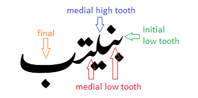
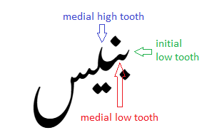
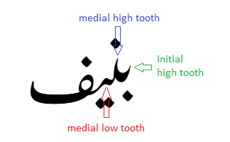
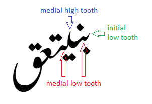
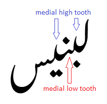
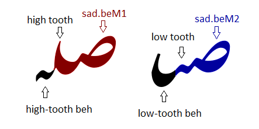

Awami Nastaliq Developer Documentation
Alternating Beh Teeth
One of the distinctive features of the Nastaliq style is the alternating beh teeth. A sequence of beh-like forms (including, of course, teh, theh, peh, medial noon, etc) will alternate between “high tooth” (point) and “low tooth” (bump) forms. Moreover, the last character in the sequence always takes a specific form depending on what follows it, and any others alternate backwards. (This is one of the reasons for the backwards logic mentioned previously.)
If you are thinking that it would be strange to have such a long sequence of beh forms, remember they are also used for teh, theh, peh, noon, yeh, and others, as shown below.
Which form the final beh glyph takes depends on what comes after. In the examples below, the bolded glyph is the one that affects the forms of the preceding glyphs.
- Beh + beh + beh + beh + beh >> initial-low-tooth + medial-low-tooth + medial-high-tooth + pre-final (low) + final

- Beh + beh + beh + seen >> initial-low-tooth + medial-low-tooth + medial high tooth + final-seen

- Beh + beh + beh + feh >> initial-high-tooth + medial-high-tooth + medial-low-tooth + final-feh

- Beh + beh + beh + beh + sad + qaf >> initial-low-tooth + medial-low-tooth + medial-high-tooth + medial-low-tooth + ain + qaf

- Lam + beh + beh + beh + seen >> initial-lam + medial-high-tooth + medial-low-tooth + medial-high-tooth + final-seen

In fact, the seen is the only character other than another beh form that is preceded by a high-tooth beh. Also note that the initial behs match the following tooth height rather than alternating. (I worked on this font for 9 years before I realized that. :-) )
What may be confusing about the design of the font is that the beh’s high tooth actually occurs on the preceding glyph. As shown below, glyphs with the .beM1 suffix have a high curved exit that functions as the high tooth of the following beh. Glyphs with the .beM2 suffix have a low bump at the exit that creates the low tooth of the following beh.
